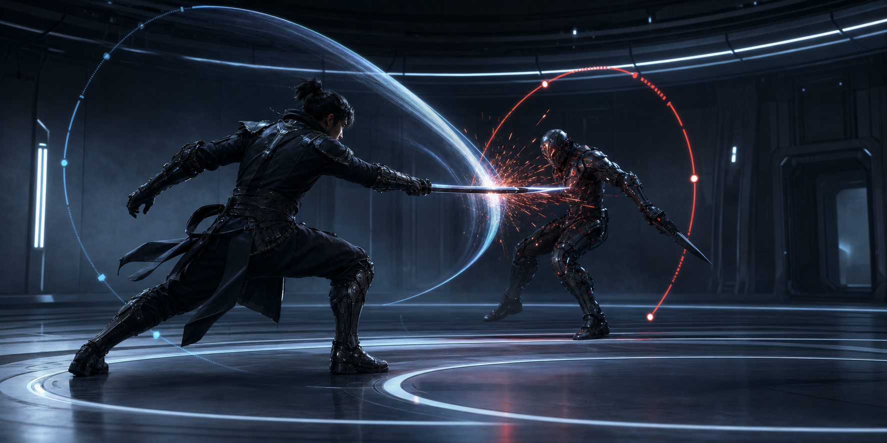

Combat systems
Duel Loop Prototype
A placeholder case study page for parry timing, attack readability, recovery windows, and enemy behavior that rewards sharp decisions.
Role: Combat designer
Focus: Readability
Tooling: Prototype